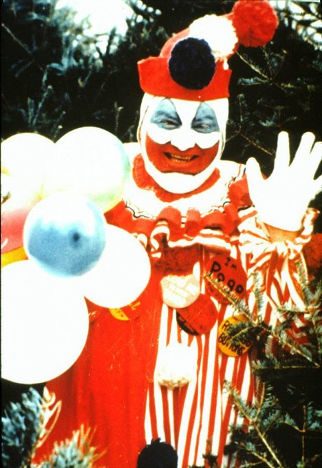

John Wayne Gacy fue un asesino en serie estadounidense conocido como “Pogo el Payaso”, debido a que participaba en eventos infantiles disfrazado con ese personaje. Entre los años 1972 y 1978 cometió múltiples homicidios contra jóvenes en el estado de Illinois.
Durante su niñez, Gacy vivió en un entorno familiar difícil marcado por un padre alcohólico y violento. También sufrió problemas de salud que afectaron su desarrollo social, lo que contribuyó a una adolescencia aislada y con baja autoestima.
A lo largo de la década de 1970, Gacy cometió numerosos delitos contra jóvenes, ganándose su confianza mediante trabajos temporales o promesas de empleo. Su doble vida como “Pogo el Payaso” sorprendió a la opinión pública tras su detención.
Presentaba una personalidad manipuladora y dual: públicamente carismático y activo en su comunidad, pero privado de empatía y con fuerte necesidad de control. Su conducta organizada contrastó con la imagen amistosa que proyectaba como payaso.